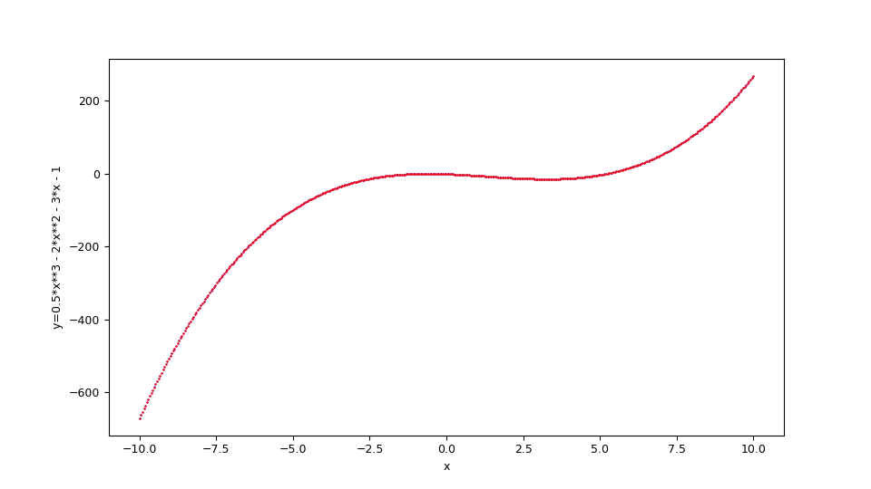
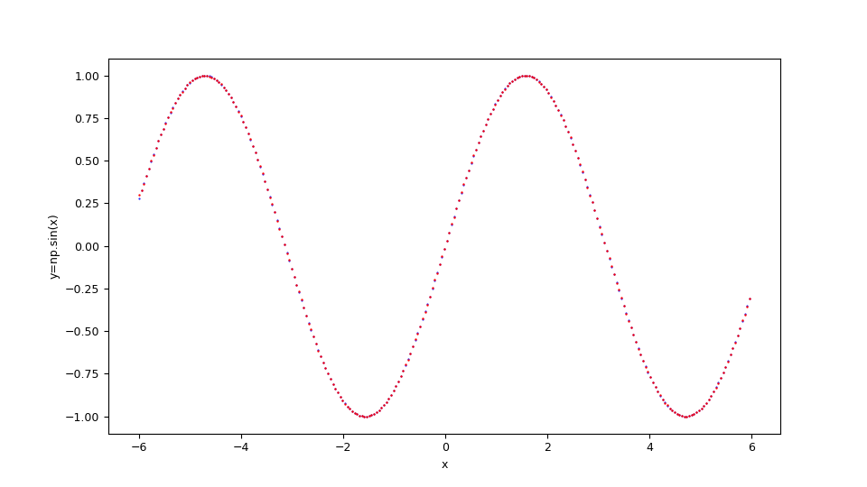
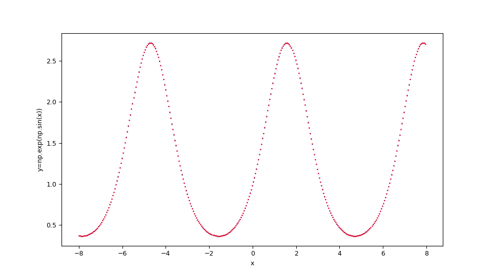
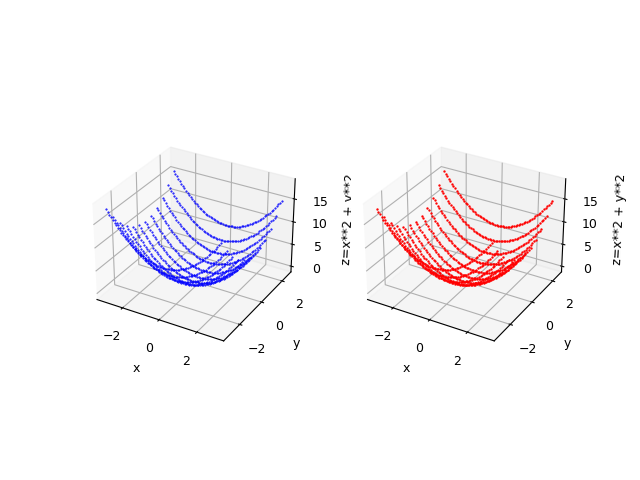
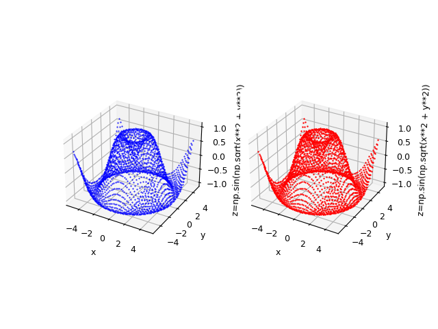

Fitting functions with PyCaret
This post deals with the approximation of real mathematical functions to one or more real variables using PyCaret without writing code but only acting on the command line of Python scripts that implement the functionality of:
- Configuration of general parameters of PyCaret regressor and training
- Prediction and error calculation
To get the code please see the paragraph Download of the complete code at the end of this post.
For the generation of synthetic training and test datasets, the following common tools (available in the repository) will be used:
-
fx_gen.pyfor the real-valued scalar functions of one real-valued variable $f \colon [a,b] \to {\rm I\!R}$ -
fxy_gen.pyfor the real-valued scalar functions of two real-valued variables $f(x,y) \colon [a,b] \times [c,d] \to {\rm I\!R}$
-
fx_scatter.pyfor the real scalar generator functions of one real variable -
fxy_scatter.pyfor the real scalar generator functions of two real variables
Configuration of general parameters of PyCaret regressor and training
This chapter presents the program: fit_func.py
that implements in sequence five calls to as many functions of the PyCaret library:
-
regression.setupwhich initializes the training environment and creates the transformation pipeline. -
regression.compare_modelswhich trains and evaluates the performance of all available estimators in the model library using cross-validation.
Note: in generalcompare_modelsreturns a grid of average scores from the various cross-validated estimators; thefit_func.pyprogram will use the best performing estimator, namely the one in the first row of the grid. -
regression.tune_modelwhich tunes the hyperparameters of a given estimator; thefit_func.pyprogram will applytune_modelto the best estimator found bycompare_modelsin the previous step. -
regression.finalize_modelthat trains a data estimator on the entire data set; thefit_func.pyprogram will applyfinalize_modelto the estimator returned bytune_modelin the previous step. -
regression.save_modelsaves the transformation pipeline and the trained model object to a file in pickle format for later use bypredict_func.py.
In fact through the
--setupparams argument the user passes a series of hyperparameters to configure the regression of PyCaret
and through the argument --compareparams instead the user passes a series of hyperparameters to the comparison between the algorithms made by PyCaret.
Besides the hyperparameters of the underlying PyCaret library, the program supports its own arguments to allow the user to pass
the training dataset and the file where to save the trained model.The program is of type M.I.S.O., that is Multiple Input Simple Output: is designed to approximate a function of the form $f \colon \rm I\!R^n \to \rm I\!R$.
The format of the input dataset is in csv format (with header); one of these columns (indicated by a mandatory argument in the command line) is the target column (the one related to the dependent variable) while all other columns contain the values of the independent variables.
Usage of the fit_func.py program
To get the program usage you can run this following command:
$ python fit_func.py --helpusage: fit_func.py [-h] [--version] --trainds TRAIN_DATASET_FILENAME
--targetcol TARGET_COLUMN --modelout MODEL_FILE
[--metric METRIC] [--setupparams SETUP_PARAMS]
[--compareparams COMPARE_PARAMS]
fit_func.py fits a multiple-input single-output function dataset using the
best regressor chosen by PyCaret
optional arguments:
-h, --help show this help message and exit
--version show program's version number and exit
--trainds TRAIN_DATASET_FILENAME
Train dataset file (csv format)
--targetcol TARGET_COLUMN
Target column name
--modelout MODEL_FILE
Output model file
--metric METRIC metric to evaluate the best model
--setupparams SETUP_PARAMS
Parameters of PyCaret regression.setup function
--compareparams COMPARE_PARAMS
Parameters of PyCaret regression.compare_models
function-
-h, --help: shows the usage of the program and ends the execution.
-
--version: shows the version of the program and ends the execution.
-
--trainds: path (relative or absolute) of a csv file (with header) that contains the dataset to be used for the training;
this file can be generated synthetically e.g. via the program
fx_gen.py. or be a dataset actually obtained by measuring a scalar and real phenomenon that depends on a single real-valued variable.
-
--targetcol: name of the column representing the dependent variable.
-
--modelout: path (relative or absolute) to a file where to save the trained model in pickle format.
-
--metric: The metrics to be used in sorting the scoring grid.
Allowed values are: MAE, MSE, RMSE, R2, RMSLE, MAPE; the default is R2.
-
--setupparams:
list of parameters to pass to the function
regression.setupbelow; see documentation ofregression.setup.
-
--compareparams:
list of parameters to pass to the function
regression.compare_modelsbelow; see documentation ofregression.compare_models
Prediction and error calculation
In this chapter the program predict_func.py is presented
and which purpose is to make predictions on a test dataset applying it to a previously selected and trained model by PyCaret
via the program fit_func.py
always without having to write code but only through the command line.
In fact, this program supports arguments through which the user passes the previously selected and trained model, the test dataset
and the error measurements to be calculated between the predictions and the true values.
The format of the incoming test datasets is identical to that of the training programs mentioned above; obviously here the target column
(that of dependent variables) is only used to compare the predicted values with the true values by calculating passed error measurements.
Usage of the predict_func.py program
To get the program usage you can run this following command:
$ python predict_func.py --helpusage: predict_func.py [-h] [--version] --model MODEL_FILE --ds DF_PREDICTION
--targetcol TARGET_COLUMN --predictionout
PREDICTION_DATA_FILE
[--measures MEASURES [MEASURES ...]]
predict_func.py makes prediction of the values of a multiple-input single-
output function with the best pretrained regressor chosen by PyCaret
optional arguments:
-h, --help show this help message and exit
--version show program's version number and exit
--model MODEL_FILE model file
--ds DF_PREDICTION dataset file (csv format)
--targetcol TARGET_COLUMN
Target column name
--predictionout PREDICTION_DATA_FILE
prediction data file (csv format)
--measures MEASURES [MEASURES ...]
List of built-in sklearn regression measures to
compare prediction with input dataset-
-h, --help: shows the usage of the program and ends the execution.
-
--version: shows the version of the program and ends the execution.
-
--model: path (relative or absolute) to the file in pickle format of the model selected and trained by PyCaret and generated by the program mentioned above.
-
--ds: path (relative or absolute) of the csv file (with header) that contains the input dataset on which to calculate the prediction.
-
--targetcol: name of the column representing the dependent variable.
-
--predictionout: path (relative or absolute) of the csv file to generate that will contain the prediction, that is the approximation of the function applied to the input dataset.
-
--measures: list of measurements to be calculated by comparing the true values of the input dataset and the predicted output values;
the list of supported metrics is defined in SciKit Learn Regression Metrics.
Examples of approximation of real-valued scalar function of a real-valued variable
Example #1
Suppose you want to approximate the function $$f(x)=\frac {1}{2} x^3 - 2 x^2 - 3 x - 1$$ in the range $[-10,10]$. The translation of this function in lambda body Python syntax is:
0.5*x**3 - 2*x**2 - 3*x - 1fx_gen.py program,
run the following command:
$ python fx_gen.py \
--dsout mytrain.csv \
--funcx "0.5*x**3 - 2*x**2 - 3*x - 1" \
--xbegin -10.0 \
--xend 10.0 \
--xstep 0.01$ python fx_gen.py \
--dsout mytest.csv \
--funcx "0.5*x**3 - 2*x**2 - 3*x - 1" \
--xbegin -10.0 \
--xend 10.0 \
--xstep 0.0475To this we intend to make a regression by
fit_func.py program
passing to the underlying regressor the following arguments: 'train_size': 0.8, 'session_id': 987654321, 'log_experiment': True, 'experiment_name': 'example1_pycaret';
then run the following command:
$ python fit_func.py \
--trainds mytrain.csv \
--targetcol y \
--metric MAE \
--modelout mymodel.pickle \
--setupparams "'train_size': 0.8, 'session_id': 987654321,
'log_experiment': True, 'experiment_name': 'example1_pycaret'"Now we intend to perform the prediction and calculation of the error using the measurements mean_absolute_error and mean_squared_error by the
predict_func.py program;
then execute the following command:
$ python predict_func.py \
--model mymodel.pickle \
--ds mytest.csv \
--targetcol y \
--predictionout mypred.csv \
--measures mean_absolute_error mean_squared_error--measures
and are very low: the first around $0.0161$ and the second around $0.002$.Finally you want to make the comparative display of the test dataset with the prediction by the
fx_scatter.py program;
therefore run the following command:
$ python fx_scatter.py \
--ds mytest.csv \
--prediction mypred.csv \
--xlabel "x" \
--ylabel "y=1/2 x^3 - 2x^2 - 3x - 1"
Figure with dispersion graphs showing the fitting in red overlay of the function
$f(x)=\frac {1}{2} x^3 - 2 x^2 - 3 x - 1$ and the original function below in blue.
$f(x)=\frac {1}{2} x^3 - 2 x^2 - 3 x - 1$ and the original function below in blue.
The shell script of this example (that show the use of these cascading programs) at the following url:
one-variable-function/pycaret/examples/example1.sh.
Example #2
Suppose you want to approximate the function $$f(x)=\sin x $$ in the range $[-6,6]$. Keeping in mind that np is the alias of NumPy library, the translation of this function in lambda body Python syntax is:
np.sin(x)
Figure with dispersion graphs showing the fitting in red overlay of the function
$f(x)=\sin x $ and the original function below in blue.
$f(x)=\sin x $ and the original function below in blue.
The shell script of this example (that show the use of these cascading programs) at the following url:
one-variable-function/pycaret/examples/example2.sh.
Example #3
Suppose you want to approximate the function $$f(x)=e^{\sin x}$$ in the range $[-8,8]$. Keeping in mind that np is the alias of NumPy library, the translation of this function in lambda body Python syntax is:
np.exp(np.sin(x))
Figure with dispersion graphs showing the fitting in red overlay of the function
$f(x)=e^{\sin x}$ and the original function below in blue.
$f(x)=e^{\sin x}$ and the original function below in blue.
The shell script of this example (that show the use of these cascading programs) at the following url:
one-variable-function/pycaret/examples/example3.sh.
Examples of approximation of real-valued scalar function of two real-valued variables
Example #1
Suppose you want to approximate the function $$f(x,y)=x^2 + y^2$$ in the set $[-5,5] \times [-5,5]$. The translation of this function in lambda body Python syntax is:
x**2 + y**2fxy_gen.py program,
run the following command:
$ python fxy_gen.py \
--dsout mytrain.csv \
--funcxy "x**2 + y**2" \
--xbegin -3.0 --xend 3.0 \
--ybegin -3.0 --yend 3.0 \
--xstep 0.05 --ystep 0.1$ python fyx_gen.py \
--dsout mytest.csv \
--funcxy "x**2 + y**2" \
--xbegin -3.0 --xend 3.0 \
--ybegin -3.0 --yend 3.0 \
--xstep 0.0875 --ystep 0.5To this we intend to make a regression by
fit_func.py program
passing to the underlying regressor the following arguments: 'train_size': 0.8, 'session_id': 987654321, 'log_experiment': True, 'experiment_name': 'example1_pycaret';
then run the following command:
$ python fit_func.py \
--trainds mytrain.csv \
--targetcol z \
--metric MAE \
--modelout mymodel.pickle \
--setupparams "'train_size': 0.8, 'session_id': 987654321,
'log_experiment': True, 'experiment_name': 'example1_pycaret'"Now we intend to perform the prediction and calculation of the error using the measurements mean_absolute_error and mean_squared_error by the
predict_func.py program;
then execute the following command:
$ python predict_func.py \
--model mymodel.pickle \
--ds mytest.csv \
--targetcol z \
--predictionout mypred.csv \
--measures mean_absolute_error mean_squared_error--measures
and are very low: the first around $0.00389864$ and the second around $0.00004255$.Finally you want to make the comparative display of the test dataset with the prediction by the
fxy_scatter.py program;
therefore run the following command:
$ python fxy_scatter.py \
--ds mytest.csv \
--prediction mypred.csv \
--xlabel "x" \
--ylabel "y" \
--zlabel "z=x**2 + y**2"
Figure with dispersion graphs showing the fitting in red overlay of the function
$f(x,y)=x^2 + y^2$ and alongside the original function in blue.
$f(x,y)=x^2 + y^2$ and alongside the original function in blue.
The shell script of this example (that show the use of these cascading programs) at the following url:
two-variables-function/pycaret/examples/example1.sh.
Example #2
Suppose you want to approximate the function $$f(x,y)=\sin \sqrt{x^2 + y^2}$$ in the range $[-5,5] \times [-5,5]$. Keeping in mind that np is the alias of NumPy library, the translation of this function in lambda body Python syntax is:
np.sin(np.sqrt(x**2 + y**2))
Figure with dispersion graphs showing alongside the fitting in red overlay of the function
$f(x,y)=\sin \sqrt{x^2 + y^2}$ and the original function below in blue.
$f(x,y)=\sin \sqrt{x^2 + y^2}$ and the original function below in blue.
The shell script of this example (that show the use of these cascading programs) at the following url:
two-variables-function/pycaret/examples/example2.sh.
Citations
@ManualPyCaret,
author = {Moez Ali},
title = {PyCaret: An open source, low-code machine learning library in Python},
year = {2020},
month = {April},
note = {PyCaret version 1.0.0},
url = {https://www.pycaret.org}
Download of the complete code
The complete code is available at GitHub.
These materials are distributed under MIT license; feel free to use, share, fork and adapt these materials as you see fit.
Also please feel free to submit pull-requests and bug-reports to this GitHub repository or contact me on my social media channels available on the top right corner of this page.